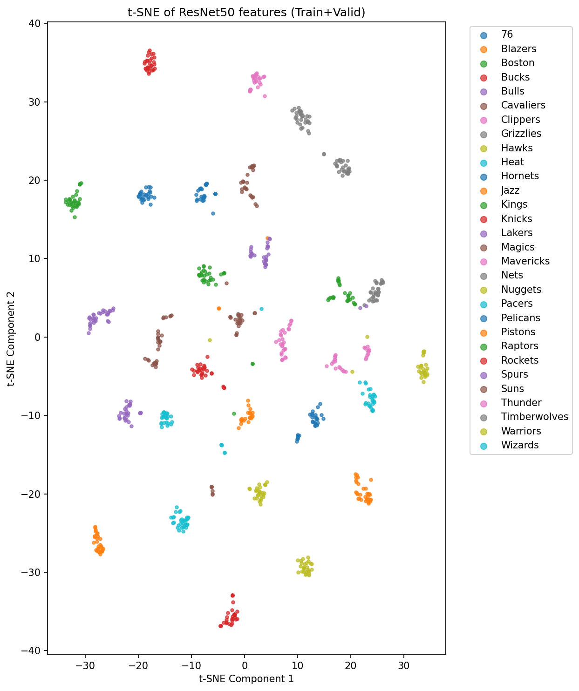

Jan 2025 - Apr 2025 / Remote
BETS Co-op Student, EON Media
Remote co-op work across data acquisition, security testing, and AI-driven media analysis projects.
GovSession Video Acquisition
I worked with a BETS co-op team on scrapers for public government video portals. The task was to revisit websites that previous co-op students had marked as difficult or unavailable and determine whether video acquisition could be made reliable.
Many sites exposed video as blob: URLs instead of direct downloadable links. I inspected browser network traffic while videos played, found underlying HLS .m3u8 manifests, and automated that discovery with Selenium performance logs.
Security Testing
For an internal assessment of a client archive portal, I reconstructed video URLs from page clues and tested access with Postman. Adding a referrer header allowed a blocked video request to succeed, revealing an access-control misconfiguration. I reported the finding to my manager for follow-up.
Sports Logo ML Research
I researched sports logo identification from video. My approach used ResNet50 as a feature extractor and trained KNN classifiers on the extracted embeddings.
- Collected and organized roughly 1,000 NBA logo images.
- Split data into training, validation, and test sets.
- Saved extracted features across experiments for comparison.
- Generated t-SNE plots to inspect feature-space clustering.
